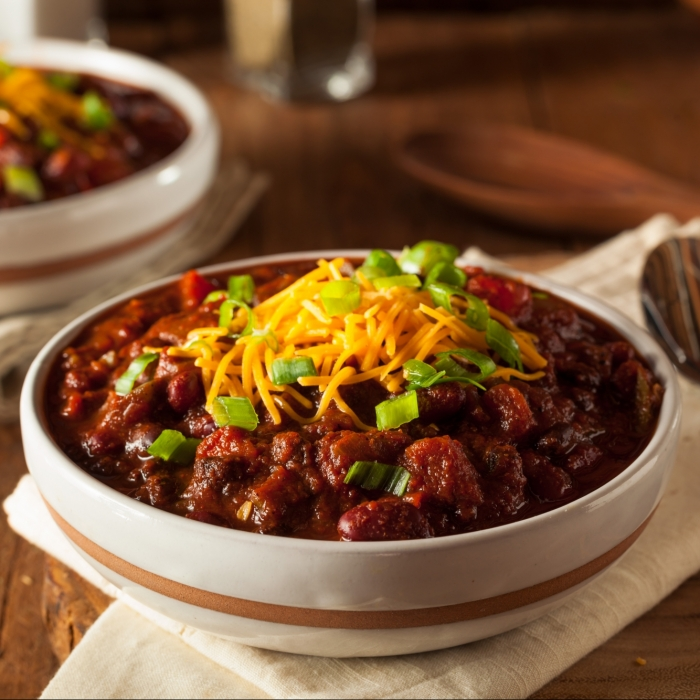

Five Eight Ingredient Beefy Chili

Description
Sneaky ingredients trying to pull a fast one in this savory and mild Insta-Pot Classic!
This is what you'll (actually) need:
- 1 pound 93% lean ground beef
- ½ teaspoon salt
- ¼ teaspoon freshly ground black pepper
- 1 cup beef bone broth, divided
- 15 ounces tomato sauce
- 1 (15.5 ounce) can chili beans, divided
- 4 teaspoons mild chili powder
- Cheddar cheese (
Optional)
How do we make this?
- Turn on a multi-functional pressure cooker (like an Instant Pot®) and select the Sauté function. Crumble ground beef into the pot and cook until brown, about 5 minutes.
- Drain off any excess liquid. Sprinkle beef with salt and pepper. Pour in half the bone broth and tomato sauce. Add ½ of the chili beans to the pot.
- Pour remaining bone broth and chili beans into a high power blender, such as a Vitamix®. Cover with lid and blend on High power for 30 seconds. Pour blended mixture into the Instant Pot®, but do not stir!
- Close and lock the lid. (Ominous, I know) Select high pressure according to your cookers manufacturer's instructions; Set timer for 5 minutes. Allow 10 to 15 minutes for pressure to build. Release pressure using the natural-release method according to manufacturer's instructions, about 5 minutes. Release remaining pressure carefully using the quick-release method as set forth in the manufacturer instructions, also about 5 minutes. Unlock and remove the lid.
- Season with chili powder and sir to combine. Divide evenly into 4 bowls. Garnish with cheddar cheese, and anything else you might like. Enjoy!